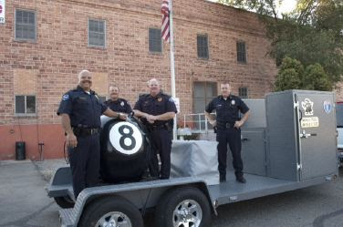

Craig Kingsbury, the veteran bureaucrat who was
recently appointed to head the Nampa, Idaho Police Department, began his law
enforcement career by hanging out near schools and buying drugs in what should
be seen as an attempt to stimulate the local narco-economy.
As a 23-year-old who “looked about 15,” Kingsbury would
change into “school-type clothes” and “hang out at the Maverick across from
Nampa High School and attempt to purchase narcotics from kids,” the chief
proudly recalls in a
recent front-page profile published by the local statist stenography sheet.
Kingsbury’s assignment as a government-licensed Narco-Creeper only
lasted a couple of weeks, and yielded very little in terms of arrests. Obviously,
it did nothing to protect the persons and property of Nampa residents. However,
it offered the future chief a suitable initiation into a municipal police
department that – like practically every other in the country – is a predatory armed
clique disguised as a public service agency.

Nampa
has a population of roughly 81,000 and a slightly higher-than-average crime
rate. The city takes its name from a physically imposing man of mixed Cherokee
and African ancestry called Nampuh, who came to be known as “Chief Bigfoot.” Indifferently
sourced but plausible legend informs us that Nampuh – a man who stood more
than 6’8” tall -- joined an Oregon-bound wagon train in 1856 and fell in love
with a young woman who later jilted him in favor of young artist named Hart.
When Nampuh confronted his romantic rival, Hart taunted him
by saying that the object of their mutual desires would never “marry a
big-footed n*gger like you.” Infuriated, Nampuh charged at the young man, who
drew a pistol and shot him in the side. This proved to be little more than an
annoyance to the huge Indian, who grabbed Hart by the neck, crushed his windpipe,
and threw him into the Snake River.
Nampuh helped himself to Hart’s weapons and headed to the
hills, where – in the company of a French trapper-turned-criminal named Joe
Louis – he formed a gang that spent the next decade staging raids on settlers,
miners, and wagon trains. Since they were in the business of extracting money
from travelers at gunpoint, it’s tempting to think that the outlaw band created
by Nampuh and Louis was the Treasure Valley’s first police department.
 |
| "Nampa -- This is the instrument of your liberation!" |

Craig Kingsbury’s new appointment as police chief follows a
career in which he has distinguished himself only by his sycophancy. He
displayed that trait to greatest effect by joining in the official persecution
of a small group of whistle-blowers in the department who protested official
corruption and criminal behavior therein.
A little less than a year ago, Nampa tax victims were handed
a bill of $189,000 to settle a
lawsuit filed by three police officers against the Nampa Police Department.
The plaintiffs claimed that former Chief William Augsburger engaged in “retaliatory
conduct … because of Plaintiffs’ protected speech and whistleblowing
activities,” in the words of the
civil complaint.
In 2009, the officers were assigned to the department’s internal
affairs division, where they discovered that waste and fraud were widespread,
and criminal misconduct by officers who used excessive force went unpunished. They
were not the first investigators to discover financial improprieties in the
department.
Between
1995 and 2002, the Nampa PD received more than $2 million from the “Justice”
Department’s Community Oriented Policing Services (COPS) program to hire 23
full-time police officers and purchase new equipment. A federal audit in 2004
found that the department couldn’t properly account for the funds. The amounts
mentioned in that report – which was based on a less-than-rigorous review of
the department – were trivial. The 2009 probe conducted by the internal affairs
division learned that the problems were deep and systemic.
The investigating officers – Leonard Claunts, Joseph Huff,
and Curtis Shankel – learned that “the Chief of Police and other command staff
(including a Deputy Chief) golfed during working hours,” recounts the lawsuit. “And
they learned that certain supervisors (Lieutenants and Deputy Chiefs) were
performing school related tasks (homework and studying) while on duty.”
While the brass was golfing at public expense, one officer
was running a personal business while on duty, using his police vehicle to make
deliveries and run errands. Another would routinely disconnect the GPS unit on
his patrol car and spend his shift time at home, where he would either sleep or
beat his wife: The internal affairs investigators noted that the officer “had
been involved in multiple domestic violence reports and 911 calls.”
“Another officer, who had use-of-force issues in the past,
used excessive force when dealing with a suspect, which was witnessed and
reported by a fellow officer,” according to the investigators. Another was in
the habit of “showing up for work under the influence of alcohol yet the safety
officer and trainer failed to take action.”
The pervasive “waste of taxpayer dollars” greatly concerned
the officers, but the more urgent problem was the fact that “police officers
were left either unsupervised and without proper supervisory support” and no
effort was made “to take appropriate disciplinary action against police
officers who had misused their authority on repeated occasions.” As a result of
that dereliction, “dangerous police
officers were being allowed to continue to do police work even though they
posed a threat to the public and to other officers.” (Emphasis added.)


Chief Augsberger, who ordered the officers to conduct the
investigation, pointedly ignored their report. This prompted Sgt. Shankel to
write an unsigned letter to the Mayor and City Council in November 2010
describing what the inquiry had uncovered. At about the same time, Investigator
Claunts’s wife, Ginger Claunts, independently sent an e-mail to Nampa Director
of Human Resources Ed Simmerman that expressed the same concerns. Simmerman
replied that he and the mayor would “look into matters … in a very discrete
[sic] manner.”
Simmerman’s spelling error suggests that he is a stranger to
the concept of discretion, and that impression was fortified by his subsequent actions. Rather than looking into the merit of the complaints
lodged by the officers, he simply forwarded Mrs. Claunts’s e-mail to Chief
Augsburger, with predictable results.
“I was slandered this weekend and I’m going to fire two
people today,” Augsburger groused to the dispatch supervisor following his
discussions with Simmerman. “People are going to get fired over this one.”
A few days later, Chief Augsburger strode angrily into a
staff meeting and demanded that everybody leave except Shankel and Claunts.
After the other employees had left the room, the Chief informed the internal
affairs investigators that he was planning on suing them for defamation – and “that
their home owners insurance would have to kick in and pay $100,000.”
Soon thereafter, Claunts and his wife received a letter from
an attorney representing Chief Augsburger and then-Deputy Chief Kingsbury
threatening them with a lawsuit if they didn’t retract the complaints made in
her letter to the Human Resources Department. The letter also demanded that the
Claunts reimburse the fees of the attorney who had composed the extortion note.
Within a few weeks, all three of the officers had been subjected
to punitive demotions and negative performance reviews. Chief Augsburger
dropped several pregnant hints that in the event of cutbacks, the
whistleblowers would be the first to lose their jobs – and that three others
who had expressed support for them might be the next to go. The chief and his
allies began to refer to that group of principled non-conformists as the “Satan
Six.”
When the officers sought help from Simmerman, the Human
Resources Director shrugged his shoulders, said that his “hands are tied,” and
that “everything is in the Chief’s hands per the Mayor.” For his part, Chief
Augsburger ignored the investigators’ report and hired an outside consulting
firm called Weaver & Associates to conduct an internal audit.
That report, which was compiled without any input from the
internal affairs investigators, validated their most important findings. Yet it
concluded with a non-sequitur that could easily have been ghost-written by the
chief himself: The consulting firm concluded that the Nampa PD’s most urgent
problem was “the disruption” caused by the earlier investigation, and
recommended that the whistleblowers be “moved and/or terminated or disciplined.”
The chief commissioned a second “independent” review to determine
if a “hostile work environment” existed in the department. Since the investigation
consisted of interviews with the command and supervisory personnel who had been
criticized in the original internal affairs inquiry, its findings were never in
doubt.
“Most [of those] interviewed thought that the complaints
were a distraction and caused upheaval in the NPD,” observed a section of the
report entitled “Comments on What to Do With Those Causing the `Tension.’” “One
said: `I’m angry that these allegations were raised. They have been a
distraction.’… A number of people said, `Fire the complainers. Let them go to
Boise if they want.’ Another: `There will always be whiners. Let the whiners
go; get rid of them.’”
The “whiners” in question, recall, were internal affairs
investigators who had documented widespread abuse of money extracted from tax
victims, and a culture of impunity in which officers who had committed criminal
offenses were free to continue preying on the public. The department’s highest
priority was to preserve its profitable “public service” façade.
While Augusburger and his henchmen – including future Chief
Kingsbury – were seeking to be rid of the whistleblowers in their ranks, the
Nampa PD was one of several cities selected for a federally subsidized pilot program involving forced blood
tests for people accused of DUI. Officer Darryll Dowell, who was part
of a “select cadre” of Nampa police assigned to act as “officer phlebotomists,”
described to the New York Times how
he would find himself “looking at people’s arms and hands, thinking, `I could
draw from that….’”
The
prospect of being pinned down and jabbed with a syringe by a policeman is
intended to extort cooperation with breath tests, a less invasive (and less infection-prone)
method of forcing a citizen to submit to a warrantless search of his person and
provide potentially self-incriminating evidence. This kind of thing is
explicitly forbidden by the Bill of Rights – as if that fact matters anymore.
Vampire
cops aren’t the only tax-subsidized predators at large in Nampa. The Nampa
Police Department has also provided cover for sexual
predators who are exploiting child detainees at the state Juvenile Corrections
Center located in that city.
Last
June, seven employees at the Idaho Department of Juvenile Corrections facility
in Nampa filed
a whistleblower lawsuit alleging that their supervisors had permitted
female staffers to engage in sexual misconduct with male detainees. The suit
also complained that the IDJC’s “cronyist, incompetent, corrupt, and
unresponsive administration” had permitted widespread “fraud and waste of
public resources,” promoted unqualified personnel and made them exempt from
scrutiny, and retaliated against employees who expressed concerns to
supervisors.
To
those aware of the Nampa PD whistleblower case, some of the complaints made in
that lawsuit will have a familiar flavor.
“People
have been playing golf while clocked in,” relates
attorney Andrew Schoppe, who filed the suit on behalf of the dissident
staffers. “Juveniles are having sex with each other” and staffers are having sex
with their prisoners. They are also grooming successors from within the inmate
population, according to one IDJC employee.
“One
staff member was [sexually] involved with a juvenile,” Shane Penrod told the Boise Weekly. “That juvenile became a
staff member and now they are involved with another juvenile.”
The
allegations weren’t limited to a tiny knot of malcontents: A total of 47
current and former employees eventually lodged complaints against the agency.
The lawsuit claims that the Nampa Police Department was made aware of the
widespread problems – including sexual misconduct – at the jail, but did
nothing about it.
The
IDJC filed an official
response denying all of the allegations. Sharon Harrigfeld, director of the
Idaho Department of Juvenile Corrections, issued
a statement reassuring the public “that our facilities are safe” and
thanking “all staff for the public service provided each day to community
safety.”
That
statement was issued on July 31. At that time, the group Harrigfeld described
as “all staff” included 31-year-old IDJC employee Julie
McCormick, who was arrested several months later and charged with sexual assault
on a 15-year-old boy.

IDJC staffer Rhonda Ledford, one of the original plaintiffs
in the whistleblower suit, recalls that employees who saw evidence of McCormick's criminal conduct expressed concerns to supervisors the previous April, but were
required to sign confidentiality statements about the situation.”
At
exactly the same time the IDJC was trying to tamp down its scandal, the Nampa
PD was successfully burying its own: On
April 27, U.S. Magistrate Judge Candy Dale authorized the $189,000
settlement and dismissed the whistleblower suit so that the department could
begin the “healing process.”
By
that time, Chief Augsburger -- who joined the Nampa PD at age 19 and never
spent a subsequent hour earning an honest living – was certainly feeling no
pain. In May 2011, he was able to retire and begin collecting his pension at
age 50. His retirement
ceremony included “presentations from local, state, and federal law
enforcement agencies, as well as stories from friends,” according to a notice
from the Mayor’s office.

None of those "stories" dealt with issues that were raised in the whistleblowers' lawsuit, which was still active at the time of Augsburger's retirement. Time-server
LeRoy Forsman was appointed to keep Augsburger’s chair warm until his
dutiful apprentice, Craig Kingsbury, could be sworn in.
This crowns the resume
of a public functionary who began his career trying to lure children into
committing acts that would send them to the local juvenile jail – where they
were likely to be sexually exploited by staffers protected by the same police
department that had arrested them.
If you can, please donate to help keep Pro Libertate on-line. Thanks, and God bless!
Dum spiro, pugno!
18 comments:
While it’s unlikely that anybody who lives outside of Nampa would be concerned about the squalid condition of its municipal police department
yeah well I'M concerned
as you say, by no means is nampa p.d. unusual
"predation" is certainly the appropriate word to describe what's been going on in "law" and "law enforcement" the past half-century in amerika
do u.s. men HAVE jobs anymore outside LE? i know they still allow males here to be linemen, plumbers, electricians and so forth. . . but it seems like for a LONG time now the only "available opportunities" are in copping, prison guarding, and suchlike
i guess eventually all the guys here will either be cops, guards or inmates, how very tidy and efficient
another desperately needed truthbomb from mr. griggs, may God bless his courage, doubtless Jesus has his back
as long as such things are tolerated, they will continue and the only change will be worsening of the pathetic state of affairs described.
unless and until the citizens of nampa act, they will have the abuse they deserve as a consequence of their inaction.
what is described is despicable. it is the worst form of crime when perpetrated by those sworn to uphold the law. it follows, therefore, that the nampa police dept is a despicable entity needing total rebuilding.
it goes without stating that many of the nampa police belong in jail. if/when that ever happens, it is my hope they are in the general population. that would be justice.
Echo ray's comment. Of course it's indeed very likely that no one, anywhere, will be very much concerned about such "squalid conditions" in their own Polizeistaatburg's detention centers until one of their own darling little angels, who could of course NEVER be arrested on suspicion of a crime (or under no pretense at all), are locked up in exactly such facilities. Then all holy howling hell will break loose.
Nampa PD has a notorious reputation here amongst the locals. And Will is correct in that it's just one amongst the many, if not the majority, of such tax-sucking entities out there.
Next time, Mr Grigg, will you please not wait till the verrrrrry end to name the location?
Everybody doesn't know Nampa is in Idaho.
~~
Lava
~~
D'oh! I've fixed that oversight. Once again I'm reminded of the hazards of being one's own editor....
So now that we're soon to be safetyfied by our Masters who'll ride to the rescue and confiscate our weapons that we'll no longer engage in our favorite recreational sport of shooting up schools and malls;
it is always refreshing to read that we'll now be protected by such fine upstanding golfers and wifebeaters and time-clock cheats. Even better is knowing while I'll likely be working until I'm in my early 90's, some of my effort goes to providing such fine men and women retirements at the grand old age of 50.
Great job Will, a despicable bunch that parades their vice with immunity. My father has been a police officer for almost 20 years and the funny thing that I remember him saying to me as a kid was, "What's the biggest gang in America?" to which I replied, "I don't know, the Bloods?" and he answered, "No, it's law enforcement."
I think he hit the nail on the head, just not in the way he may have meant it.
Just another of the thousands upon thousands of tax feeding parasites protecting and serving the crap out of injustice, greed and corruption. A reckoning is coming, and these criminals will not like the results, as We the People are watching. Thanks Will.
Another solid post, Will. Thanks!
Narco creeper...This seems to the the past/present of most cops.
What concerns me are the sunshine patriots that have recently found a voice to defend the 2nd amendment, since it has become fashionable.
These are the same cops who by their actions, don't seem to recognize that any other inalienable rights exist. The ones that would put a bullet in your head for smoking a joint right after loudly defending the second amendment.
JFK said it best when peaceful revolution is impossible violent revolution is inevitable. Sad to see good cops who truly follow the law get punished and silenced and shit cops like those get praises retirement plans etc.
law enforcement is pitiful golfing going home during work you try that shit in a bank youll be fired on the spot i should know i worked in a bank diligently and my father still works in one but the cops seem to not have job ethics and allow any dumb thug and parasite to join em i miss the old west sheriffs the honorable men from back then.
I sometimes wish something like the assassins creed game series assassin brotherhood existed to meet justice to such corruption.
Mr. Grigg,
I would love for you to write about the Meridian PD, which I have had some negative experience with myself. Several months ago, I was driving down Main Street at night without my lights on. I passed one of Meridian's finest, who pulled a U-turn and turned on his flashing lights. I recognized what the problem was and thought he would just tell me what I knew, run the license, and let me be on my way. After providing my license and registration and waiting for over ten minutes, I had realized what was going on. Officer Brown had called the K-9 unit and they soon arrived. He again came to my window, along with another officer on the passenger side. I was told to get out of the vehicle. I asked whether I was legally required to do that. Immediately, the other officer came through my passenger door and ripped the keys from the ignition. Officer Brown then forcefully demanded that I get out of the car, which I did.
I was then sternly lectured on obeying a lawful police order, frisked, and told I was "this close" to going to jail. This was very strange indeed as at the time at Boise State I was vice president of Alpha Phi Sigma, the criminal justice honor society. We weren't warned about this in the CJ program!
I was then told that the dog alerted to my passenger door handle and was asked if I had been giving rides to drug users. I hadn't had a passenger for weeks. They also asked when the last time I used marijuana was, foregoing the question of whether I had even ever used marijuana, which I hadn't. After more lecturing, I was given a $62 ticket for not having my lights on.
I informed the mayor of the actions of the police and the complaint was directed to the supervisor of Brown. I called and left a message to Sgt. Brown and requested that he call me in the morning or early afternoon as I worked nights starting at 6 PM. He was extra courteous and called me at 5:30. During our conversation, he addressed me by the respectful title of "buddy" and told me my complaint was "freakin' ridiculous." "Are you accusing me of having rogue officers?" he asked. I simply asked what logical possibilities could exist since I know I don't use drugs and drugs have never been in my car. His response: "You must be using drugs!" Lastly, I wanted him to admit that the possibility for abuse was inherent: there is no way I can prove their dog is faulty or (more likely) that the officers claimed the dog alerted whether or not it did, leading to the conclusion that they can search any vehicle at their discretion. To this he said something unintelligible about how the courts oversee this process, which made no sense. I wish I had recorded the conversation, but, alas, it was during my commute.
On another occasion, I saw the flashing red-and-blue lights behind a stopped vehicle. I parked myself across the street and observed. An officer came to my window, asking what I was doing here. I responded that I was here to make sure no one's rights were being violated. I was, again, told to get out of the vehicle. And like before, I asked if I was legally required to get out of the vehicle. The affirmative response came, though less aggressively than last time. I was told to follow the officer to the sidewalk and another officer joined him. I told them about the previous incident and he said, "That's funny! I just called for a dog." I was told that these dogs are well trained. Again, after searching through my entire car and finding nothing, I was told that the dog alerted on my passenger door handle. The officer then changed his story to "these dogs aren't 100% right all the time" and "someone might have brushed against my door handle in a parking lot." The only parking lots my car had seen during the previous few weeks was that of a church and the far end of the lot where I catch a commuter bus.
Please forgive the length of this comment (I actually had more but was required to edit it).
Thanks for all your fantastic work.
Cops in general are corrupt but I know first hand just how corrupt Caldwell police are in having a relative sexually abused by a school SRO.
Was the perpetrator in that case Ruben Delgadillo, by any chance?
It all continues to spin around and around!!!
I can give you specific facts about corruption in the Nampa PD, the Canyon County Prosecuting Attorney's Office, and the judiciary in the Nampa Annex.
Just the tip of the iceberg includes perjury and repeated failures to perform due diligence by prosecutors, failures to supervise by Bryan Taylor, repeated unethical continuations of wrongful prosecutions, criminal violations of Constitutional rights by prosecutors, failures to observe Idaho Criminal Rules by prosecutors, failures to observe Idaho Code by Matthew Bever and Magistrate Judge Jerold Lee, preparation of a false police report by Brad Barnum at Nampa PD, ..................and it goes on and on and on.................
Can anyone on here help me please . I have a solid civil rights case and I can't find a lawyer . I can't live with the aftermath of what has happened to me and what is happening to my family because the Nampa P.D's failure to abide by regulations make false arrest and the prosecutors office to push through with a case where one should not exist . please I am so lost and depressed and anxious all the time I need answers I need resolve
Anonymous, please contact me -- WNGrigg [at] msn [dot] com -- and I'll see what can be done.
Post a Comment